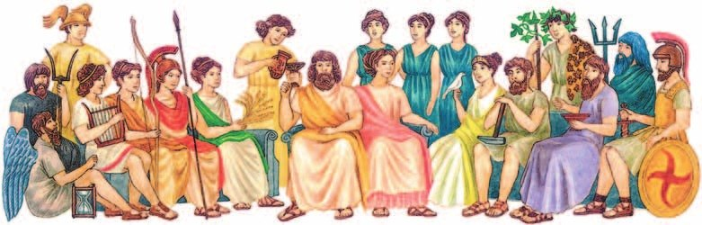
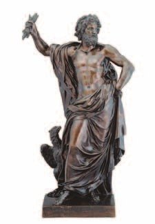
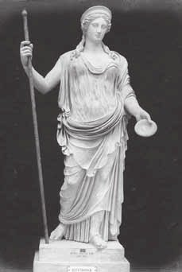
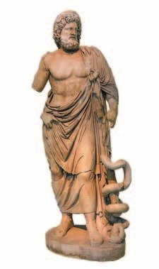
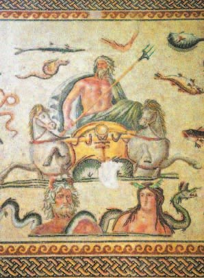
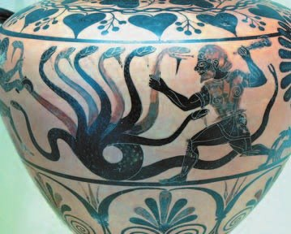

Зевс и боги Олимпа
Греки верили: миром правят боги. Боги живут повсюду в природе. В рощах, горах, долинах и на лугах — , в лесах — .
Откуда взялись боги? Сначала был . Из него появились Земля — Гея — и Небо — Уран. Их дети — двенадцать могучих , три одноглазых великана-циклопа и три великана с пятьюдесятью головами.
Титан , бог времени, обманом сверг своего отца Урана. За это злодейство в мир пришли беды: богини мести , смерть, раздор, обман, уничтожение, тяжёлый сон.
Кронос боялся, что дети поступят с ним так же. И глотал их! Последнего сына, Зевса, мать Рея спрятала в пещере на Крите — том самом острове из §20. А мужу дала проглотить камень, завёрнутый в пелёнки.
Зевс вырос и заставил отца вернуть проглоченных братьев и сестёр. Вместе они победили титанов и сбросили их вместе с Кроносом в — вечную тьму. Зевс стал главным над всеми богами.
Двенадцать главных богов жили на самой высокой горе Греции — . Поэтому их и зовут . Там всегда светит солнце и всегда лето. Боги не стареют и не умирают.
сидит на золотом троне и повелевает громом и молниями. Ему подчиняются все боги. Его жена — покровительница брака и семьи. За что отвечали остальные — смотри на схеме ниже.
Ещё одного бога греки очень почитали, хотя на Олимпе он не жил, — , бога медицины. Он сын Аполлона и смертной женщины. Лечить его научил мудрый кентавр Хирон. Асклепий умел даже оживлять мёртвых — за это Зевс поразил его молнией. Но потом вернул к жизни и сделал богом.
Храмы Асклепия были как больницы — их нашли около трёхсот. Жрецы лечили сначала магией, а потом диетой, травами, гимнастикой и даже операциями. Одним из жрецов был — он заложил основы медицины без магии.
У ворот дворца на Олимпе стоят два огромных сосуда: в одном — добро, в другом — зло. Зевс черпает из них и посылает людям кому счастье, кому несчастье.
Но даже Зевс не может изменить судьбу. Её решают три сестры — . Они прядут нить жизни каждого человека. Оборвалась нить — человек умер.
Древние греки имели своё представление об окружающем мире и верили, что им управляют боги. Они обожествляли природу и населяли её различными силами, например, по их мнению, в рощах, горах, долинах, лугах жили нимфы, в лесах — сатиры.
Любопытные детали. По представлениям древних греков, сначала из Хаоса появилось первое поколение богов: Земля-Гея и Небо-Уран. От них произошли боги второго поколения: шесть сыновей и шесть дочерей — могучие титаны, три одноглазых великана-циклопа и три великана с пятьюдесятью головами.
Титан Кронос, бог времени, обманом сверг своего отца Урана и воцарился в мире. В наказание за это страшное преступление появились на земле богини мщения Эринии и ужасные божества: Танатос — смерть, Эрида — раздор, Апата — обман, Кер — уничтожение, Гипнос — мрачный, тяжёлый сон.
Кронос хотел властвовать вечно. Опасаясь, что его дети поступят с ним так же, как он со своим отцом, Кронос проглатывал их. Последнего своего ребёнка, Зевса, жена Кроноса Рея спрятала в пещере на Крите, а мужу дала проглотить завёрнутый в пелёнки камень. Когда Зевс вырос, он заставил отца вернуть на свет проглоченных им детей. Они начали борьбу с Кроносом и другими титанами. После их победы титаны и Кронос были низвергнуты в Тартар, вечную тьму. Зевс получил верховную власть над всеми богами.
Двенадцать главных богов обитали на самой высокой горе Греции — Олимпе. Их называли олимпийцами. На Олимпе всегда светит солнце и царит вечное лето, а во дворце живут не знающие старости и смерти боги. Зевс, верховный владыка, отец богов и людей, восседает на высоком золотом троне. Он повелевает громом и молниями. Зевсу повинуются все другие боги. Его жену — богиню Геру — греки почитали как покровительницу брака и семьи.
Богиней семейного очага и хранительницей домашнего мира была Гестия. Посейдон считался богом моря. В число олимпийских богов входили Деметра — богиня плодородия и земледелия, Аполлон — бог солнечного света и покровитель искусств, Афина — богиня мудрости и знаний, Афродита — богиня красоты, Артемида — юная богиня охоты и покровительница всего живого, Арес — бог войны, Гефест — бог кузнечного дела и ремёсел, Дионис — бог виноделия и растительности.
Любопытные детали. Асклепий — бог медицины, был одним из самых почитаемых в Древней Греции, хотя и не входил в пантеон олимпийских богов. Согласно мифу, Асклепий был сыном Аполлона и смертной женщины. Его воспитывал мудрый кентавр Хирон, обучивший мальчика искусству врачевания. Асклепий умел не только излечивать болезни, но и оживлять мёртвых. За вмешательство в законы природы Зевс поразил Асклепия молнией, но позднее вернул его к жизни и сделал богом.
Посвящённые Асклепию храмы — асклепионы — были возведены по всей Греции, их найдено около 300. Многие города Древней Греции оспаривали право считаться его родиной. Асклепионы были своего рода лечебницами, где жрецы бога — асклепиады — лечили сначала с помощью магических ритуалов, а позднее стали применять и другие методы: диету, лечение травами, гимнастические упражнения и хирургические вмешательства. Одним из таких жрецов в святилище на острове Кос был Гиппократ, заложивший основы светской медицины. Атрибут Асклепия — посох, обвитый змеёй, — стал символом медицины.
У ворот дворца на Олимпе стоят два огромных сосуда: в одном — дары добра, в другом — дары зла. Зевс черпает из них и посылает людям: одним — счастье, другим — несчастья. Но даже верховный правитель не в силах изменить судьбу людей.
Судьбу каждого человека и самого Зевса определяют три сестры — богини судьбы — мойры. Они прядут нить человеческой жизни, и, когда нить обрывается, человек умирает.



- Сколько олимпийских богов было у древних греков?
- Какую роль древние греки приписывали Зевсу?
1. Кронос глотал детей, чтобы они его не свергли. Почему это всё равно случилось?
2. Зевс — самый главный бог. Но есть то, что не подвластно даже ему. Что это и кто этим управляет?
3. Асклепий не жил на Олимпе. За что же греки так его почитали?
Посейдон и Аид
Мир поделили три брата. Небо — Зевсу. Море — . А подземное царство — .
Посейдон живёт во дворце глубоко под водой вместе с женой Амфитритой. Вокруг — сотни морских божеств: его сын Тритон, мудрый старец Нерей, сёстры Амфитриты — нереиды, что играют в волнах.
Посейдон мчится по морю на колеснице, в руке — . Взмахнёт им — поднимаются огромные волны, начинается буря. Рвутся паруса, ломаются мачты, корабли тонут. А от удара трезубца даже дрожит земля.
Аид правит глубоко под землёй. Солнца там нет — вечный мрак. Текут подземные реки: священный Стикс, река забвения и печальный Ахерон. Через Ахерон старик Харон перевозит души умерших.
Души пили воду из Леты — и навсегда забывали свою жизнь. Отсюда выражение «кануть в Лету» — пропасть навсегда.
Вход сторожит трёхглавый пёс . Назад отсюда не возвращается никто. По полям бродят тени умерших.
Рядом с Аидом на золотом троне — его жена . Пока она под землёй, вся природа умирает. Вернётся на землю — приходит весна, всё расцветает.
У трона — богини мести эринии, крылатый бог смерти Танатос с мечом, бог глубокого сна Гипнос и боги снов — и радостных, и страшных.
Брат Зевса — Посейдон — властвует над морем. Глубоко в пучине моря стоит дворец, где обитает Посейдон со своей женой Амфитритой. Их окружают сотни морских божеств. Среди них сын Посейдона — Тритон, отец Амфитриты — вещий старец Нерей, сёстры Амфитриты, играющие среди волн, — нереиды.
Посейдон с трезубцем в руке разъезжает по морю в колеснице. Когда он взмахивает своим трезубцем, на море поднимаются огромные волны и начинается буря. И тогда рвутся паруса и ломаются мачты на кораблях, а некоторые из них гибнут в морской пучине. От удара трезубца повелителя моря даже колеблется земля.
Глубоко под землёй правит мрачный брат Зевса — Аид. Сюда не проникают лучи солнца, здесь царит вечный мрак. Под землёй текут реки: священная река Стикс, река забвения Лета и печальный Ахерон, через воды которого перевозит души умерших людей в царство мрака старый Харон. Души умерших пили из реки и забывали навсегда свою жизнь. Из этих мифов пришло выражение «кануть в Лету», что означает «пропасть навсегда».
Вход в царство мёртвых сторожит трёхглавый пёс Цербер. Никому не было возврата из этого царства скорби. Во мраке по полям Аида бродят неприкаянные, бесплотные тени умерших.
Аид восседает на золотом троне вместе с женой Персефоной. Когда она находится в подземном царстве, вся природа умирает, а когда возвращается на землю, то наступает весна и природа расцветает. Возле трона расположились богини мщения эринии, которые неумолимо преследовали преступников, рядом с мечом в руке крылатый бог смерти Танатос. Здесь же бог тяжёлого, глубокого сна Гипнос и многочисленные боги как радостных, так и страшных сновидений.

- Какими способностями греки наделяли Посейдона и Аида?
- Какие ещё божества пребывали в подземном царстве?
4. Чем похожи и чем различаются царства Посейдона и Аида?
5. Зевс и Посейдон — оба повелевают грозными силами природы. Какими?
6. В разделе 3 сказано: боги приносят смену времён года. Какой миф из этого раздела это показывает?
Боги и люди
Греки верили: всё в мире — по воле богов. Боги приносят день и ночь, меняют времена года, насылают болезни и засуху, дарят богатый урожай.
И ведут себя боги как люди: влюбляются, женятся, ссорятся, сплетничают, завидуют, злятся. А от их ссор часто страдают люди.
Иногда бог женился на человеке. Их детей называли .
Самый известный герой — . Ты уже читала про него в книжке о мифах. Он сын Зевса и смертной женщины Алкмены. О его двенадцати подвигах рассказывают мифы.
Геракл голыми руками задушил льва-людоеда, а его шкуру потом носил как плащ. Царь Эврисфей хотел погубить героя и велел привести Цербера из царства Аида. Геракл привёл и его!
А ещё он победил — змею с девятью головами. Срубит одну — вырастают две или три. Одному не справиться! Геракл позвал племянника . Тот прижигал шеи горящей головнёй, и новые головы не вырастали. Так Геракл срубил все головы, даже бессмертную.
Геракл очищал землю от чудовищ и разбойников. За свои труды он получил бессмертие и вечную жизнь на Олимпе.
Древние греки верили, что всё в мире происходит по воле богов. Они приносят в мир день и ночь, смену времён года, насылают болезни и засухи, покровительствуют хозяйству, одаривают богатым урожаем. Боги вели себя как люди: влюблялись, женились, у них рождались дети. Боги ссорились, сплетничали, завидовали, злились. Часто их пороки оборачивались бедствиями для людей.
Боги порой устанавливали тесные связи с людьми, вступая с ними в браки. Детей от таких браков называли героями. Самый известный из героев — Геракл — сын Зевса и смертной женщины Алкмены. О двенадцати подвигах этого героя рассказывают мифы. Геракл голыми руками задушил льва-людоеда, шкуру которого потом носил как плащ. Царь Эврисфей, желая погубить Геракла, приказал ему привести трёхголового пса Цербера из подземного царства Аида. Герой выполнил и это поручение.
Он уничтожил Гидру — чудовище с телом змеи и девятью головами. Стоило Гераклу срубить одну голову, как на её месте сразу же вырастало ещё две или три. Увидев, что в одиночку ему не справиться с Гидрой, Геракл позвал своего оруженосца и племянника Иолая. Тот стал прижигать горящими головнями основания срубленных голов, не давая им вырасти вновь. Таким способом Геракл срубил все головы Гидры, включая бессмертную.
Геракл совершил много подвигов, употребляя свою силу на благие дела и очищая землю от чудовищ и разбойников. За свои труды и страдания могучий герой удостоился бессмертия и вечного блаженства на Олимпе.

- Кого называли героями?
- Кто из героев был наиболее известен? Чем он прославился?
7. Откуда, по мнению греков, берутся несчастья у людей? Найди два ответа в разных разделах.
8. Геракл — сын Зевса. Почему же его называют героем, а не богом?
9. Почему Эврисфей отправил Геракла именно за Цербером?
Подведём итоги
- Какие несчастья, по легенде, принёс в мир Кронос?
- Какие боги разделили между собой землю, море и подземное царство?
- Какие главные богини были у древних греков?
- Почему главных богов греки называли олимпийцами?
- Используя дополнительные источники информации, выясни, какие 12 подвигов совершил Геракл. Подготовь короткое сообщение об одном из них.
Прочитай список понятий. Какое из них лишнее? Объясни почему. Зевс, Осирис, Геракл, Аид.
Сформулируй ответ на главный вопрос параграфа — какими способностями греки наделяли своих богов? Приведи два-три довода.
Проверь себя
Нажимай по очереди — с самого начала мира.
1. Где жили двенадцать главных богов?
2. Кто покровительница брака и семьи?
3. Чем Посейдон поднимает бурю?
4. Кто сторожит вход в царство Аида?
5. Кто определяет судьбу людей и даже самого Зевса?
6. Кто помог Гераклу победить Гидру?
Расскажи вслух
Как, по мифам, появились боги
- Хаос → Земля-Гея и Небо-Уран → титаны, циклопы и великаны с пятьюдесятью головами.
- Кронос сверг Урана и глотал детей; за его злодейство в мир пришли беды.
- Рея спрятала Зевса на Крите; Зевс вырос, победил титанов и сбросил их в Тартар.
Боги Олимпа
- Двенадцать главных богов жили на горе Олимп, их звали олимпийцами; там вечное лето, боги не стареют.
- Зевс на золотом троне — гром и молнии, ему подчиняются все; Гера — брак и семья.
- Остальные: Посейдон, Гестия, Деметра, Аполлон, Афина, Афродита, Артемида, Арес, Гефест, Дионис.
Царство Посейдона и царство Аида
- Посейдон — море: дворец в пучине, жена Амфитрита, трезубец, бури и землетрясения.
- Аид — под землёй: вечный мрак, реки Стикс, Лета, Ахерон, перевозчик Харон, пёс Цербер.
- Персефона: пока она под землёй — природа умирает, вернётся — весна.
Геракл
- Герой — сын Зевса и смертной женщины Алкмены; двенадцать подвигов.
- Задушил льва-людоеда, привёл Цербера из царства Аида, победил Гидру вместе с Иолаем.
- Очищал землю от чудовищ и разбойников — за это получил бессмертие и жизнь на Олимпе.
Главный вопрос: какими способностями греки наделяли богов
- Боги бессмертны и не стареют.
- Повелевают природой: гром и молнии, море и землетрясения, смена времён года, урожай и болезни.
- Но вели себя как люди — ссорились и завидовали; и даже Зевс не властен над судьбой — её решают мойры.